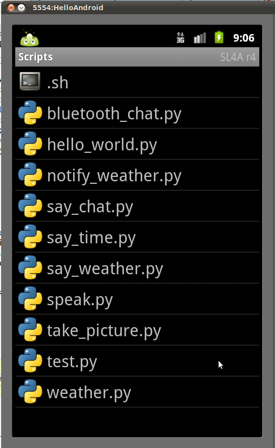
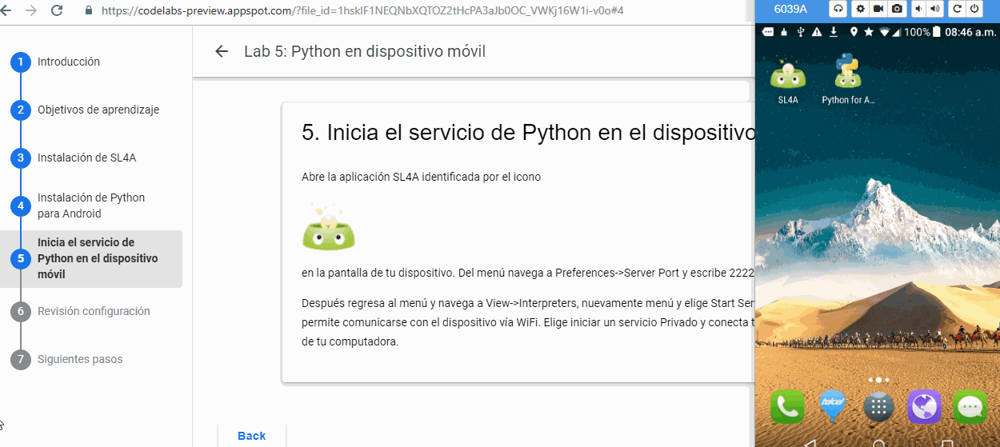
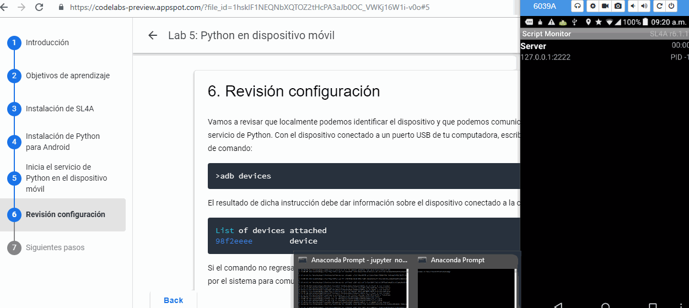

Para ejecutar Python en Android vamos a utilizar un software que se llama Scripting Layer 4 Android. Esta tecnología permite ejecutar lenguajes programáticos e interactivos en el dispositivo móvil, tales como Lua, Ruby y por supuesto Python.
La configuración del dispositivo móvil consta de tres pasos principales, los cuales vamos a realizar en esta laboratorio.
Los pasos principales son
- Instalar SL4A en el dispositivo
- Instalar Python en el dispositivo
- Configurar el servicio de Python en el dispositivo
- Instalar y configurar Python en un dispositivo móvil
Qué haremos
Vamos a realizar los pasos necesarios para tener disponible el intérprete de Python en nuestro dispositivo móvil. |  |
What you'll learn
- Cómo instalar y configurar Python en un dispositivo Android
- Como configurar el sistema ejecutar el servicio de Python
Que vamos a necesitar
- Un dispositivo móvil con Android >= 4 instalado y con las siguientes características:
- con acceso a internet
- Habilitado en modo desarrollador
- Habilitado para instalar fuentes externas
- Cable USB de datos
- Conexión a internet
- Computadora con
adbinstalado y accesible
Video
Para poder ejecutar comandos de Python en Android usaremos una tecnología que permite acceder a la mayoría de las funcionalidades de Android a través de fachadas.
Los pasos siguientes tienen que realizarse en el dispositivo móvil. La instalación es muy sencilla y automática.
Descarga el software de SL4A
Captura la siguiente imagen con la cámara de tu dispositivo para descargar el Scripting Layer For Android
|

Instala sl4a
Para instalar el software debes tener habilitada la opción de permitir instalación de software externo bajo la configuración de opciones de desarrollador del dispositivo.
Ejecuta el programa que descargaste y sigue las instrucciones en la pantalla del dispositivo.
Descarga el software de Python
Captura la siguiente imagen con la cámara de tu dispositivo para descargar Python for Android
|

Instala python
Para instalar el software debes tener habilitada la opción de permitir instalación de software externo bajo la configuración de opciones de desarrollador del dispositivo.
Ejecuta el programa que descargaste y sigue las instrucciones en la pantalla del dispositivo. El programa descarga archivos adicionales y completa la instalación.
Abre la aplicación SL4A identificada por el icono

en la pantalla de tu dispositivo.
|  |
El servicio Público permite comunicarse con el dispositivo vía WiFi. Elige iniciar un servicio Privado y conecta tu dispositivo a un puerto USB de tu computadora.
Vamos a revisar que localmente podemos identificar el dispositivo y que podemos comunicarnos con él a través del servicio de Python. Con el dispositivo conectado a un puerto USB de tu computadora, escribe lo siguiente en la ventana de comando:
adb devicesEl resultado de dicha instrucción debe dar información sobre el dispositivo conectado a la computadora, por ejemplo
List of devices attached
98f2eeee deviceSi el comando no regresa información revisa la conexión del dispositivo al puerto USB y asegurate que está autorizado por el sistema para comunicarse con la computadora.
Después escribe
adb forward tcp:9999 tcp:2222Finalmente, ejecuta el siguiente comando y observa la pantalla de tu móvil:
python -c "import sys; sys.path.append(u'C:\\Users\\HoracioTapiaMcClung\\.ipython'); import android; droid=android.Android(); droid.makeToast('Hola desde Python')"
Asegúrate de modificar la ruta del directorio donde copiaste el módulo android.py en un laboratorio anterior, en mi caso particular 'C:\\Users\\HoracioTapiaMcClung\\.ipython
Si el comando anterior arroja error, hay algún problema con la configuración, de otro modo debes ver un mensaje en la pantalla con el texto |  |
¿Pudiste instalar el programa SL4A en tu dispositivo móvil?
¿Pudiste instalar el programa Py4A en tu dispositivo móvil?
¿Pudiste hacer un "brindis" (makeToast) con el dispositivo desde tu computadora?
Las entregas se especifican empezando con el nombre del archivo y la descripción del contenido.